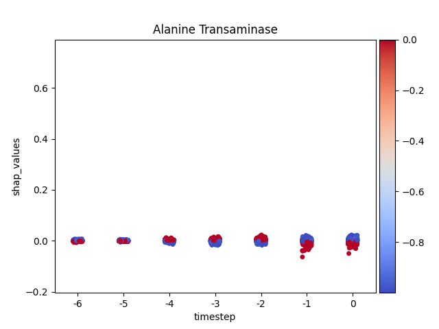
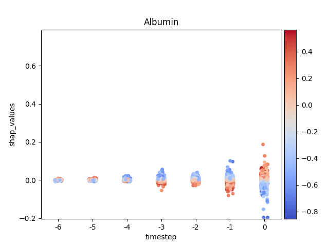
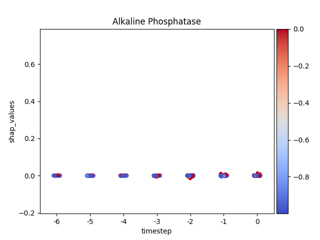
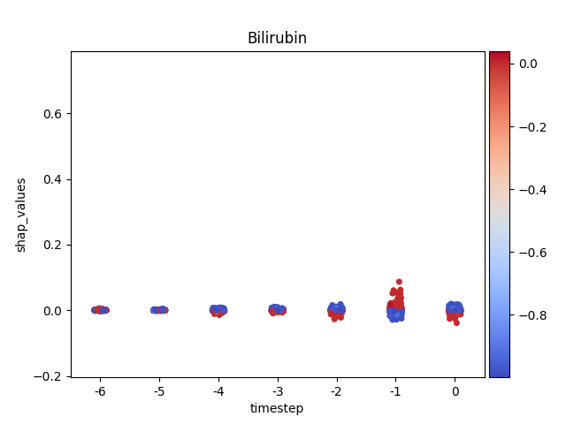
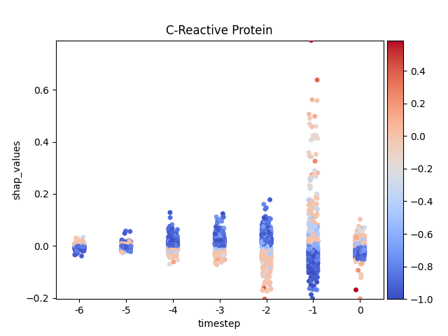
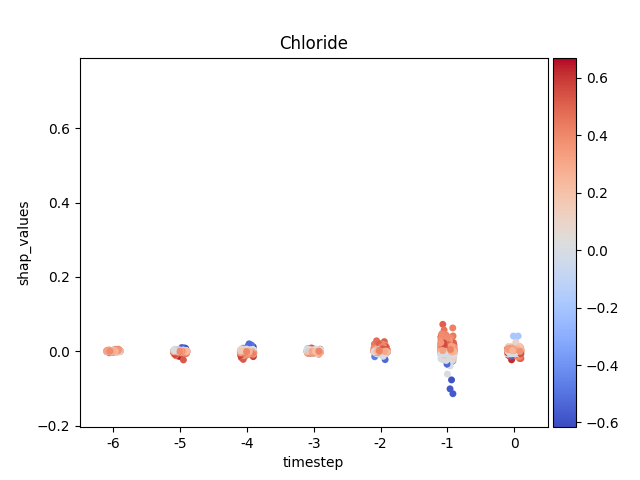
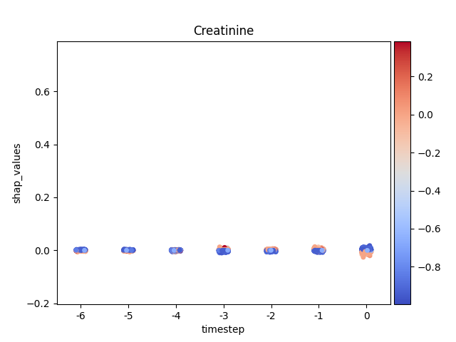

Note
Click here to download the full example code
Shap - Main 05 - Stripplot¶
Warning
This method is quite slow.
9 10 11 12 13 14 15 16 17 18 19 20 21 22 23 24 25 26 27 28 29 30 31 32 33 34 35 36 37 38 39 40 41 42 43 44 45 46 47 48 49 50 51 52 53 54 55 56 57 58 59 60 61 62 63 64 65 66 67 68 69 70 71 72 73 74 75 76 77 78 79 80 81 82 83 84 85 86 87 88 89 90 91 92 93 94 95 96 97 98 99 100 101 102 103 104 105 106 107 108 109 110 111 112 113 114 115 116 117 118 119 120 121 122 123 | # Libraries
import shap
import numpy as np
import pandas as pd
import seaborn as sns
import matplotlib.pyplot as plt
import matplotlib as mpl
import matplotlib.colorbar
import matplotlib.colors
import matplotlib.cm
from mpl_toolkits.axes_grid1 import make_axes_locatable
try:
__file__
TERMINAL = True
except:
TERMINAL = False
# ------------------------
# Methods
# ------------------------
def scalar_colormap(values, cmap, vmin, vmax):
"""This method creates a colormap based on values.
Parameters
----------
values : array-like
The values to create the corresponding colors
cmap : str
The colormap
vmin, vmax : float
The minimum and maximum possible values
Returns
-------
scalar colormap
"""
# Create scalar mappable
norm = mpl.colors.Normalize(vmin=vmin, vmax=vmax, clip=True)
mapper = mpl.cm.ScalarMappable(norm=norm, cmap=cmap)
# Get color map
colormap = sns.color_palette([mapper.to_rgba(i) for i in values])
# Return
return colormap, norm
def scalar_palette(values, cmap, vmin, vmax):
"""This method creates a colorpalette based on values.
Parameters
----------
values : array-like
The values to create the corresponding colors
cmap : str
The colormap
vmin, vmax : float
The minimum and maximum possible values
Returns
-------
scalar colormap
"""
# Create a matplotlib colormap from name
# cmap = sns.light_palette(cmap, reverse=False, as_cmap=True)
cmap = sns.color_palette(cmap, as_cmap=True)
# Normalize to the range of possible values from df["c"]
norm = mpl.colors.Normalize(vmin=vmin, vmax=vmax)
# Create a color dictionary (value in c : color from colormap)
colors = {}
for cval in values:
colors.update({cval: cmap(norm(cval))})
# Return
return colors, norm
def load_shap_file():
"""Load shap file.
.. note: The timestep does not indicate time step but matrix
index index. Since the matrix index for time steps
started in negative t=-T and ended in t=0 the
transformation should be taken into account.
"""
data = pd.read_csv('./data/shap.csv')
data = data.iloc[:, 1:]
data = data.rename(columns={'timestep': 'indice'})
data['timestep'] = data.indice - (data.indice.nunique() - 1)
return data
# -------------------------------------------------------------------
# Main
# -------------------------------------------------------------------
# Configuration
cmap_name = 'coolwarm' # colormap name
norm_shap = True
# Load data
data = load_shap_file()
#data = data[data['sample'] < 100]
# Show
if TERMINAL:
print("\nShow:")
print(data)
|
Let’s see how data looks like
127 | data.head(10)
|
Let’s show using sns.stripplot
Warning
This method seems to be quite slow.
Note
y-axis has been ‘normalized’
138 139 140 141 142 143 144 145 146 147 148 149 150 151 152 153 154 155 156 157 158 159 160 161 162 163 164 165 166 167 168 169 170 171 172 173 174 175 176 177 178 179 180 181 182 183 184 185 186 187 | def add_colorbar(fig, cmap, norm):
""""""
divider = make_axes_locatable(plt.gca())
ax_cb = divider.new_horizontal(size="5%", pad=0.05)
fig.add_axes(ax_cb)
cb1 = matplotlib.colorbar.ColorbarBase(ax_cb,
cmap=cmap, norm=norm, orientation='vertical')
# Loop
for i, (name, df) in enumerate(data.groupby('features')):
# Get colormap
values = df.feature_values
cmap, norm = scalar_palette(values=values,
cmap=cmap_name, vmin=values.min(),
vmax=values.max())
# Display
fig, ax = plt.subplots()
ax = sns.stripplot(x='timestep',
y='shap_values',
hue='feature_values',
palette=cmap,
data=df,
ax=ax)
# Format figure
plt.title(name)
plt.legend([], [], frameon=False)
if norm_shap:
plt.ylim(data.shap_values.min(),
data.shap_values.max())
# Invert x axis (if no negative timesteps)
#ax.invert_xaxis()
# Create colormap (fix for old versions of mpl)
cmap = matplotlib.cm.get_cmap(cmap_name)
# Add colorbar
add_colorbar(plt.gcf(), cmap, norm)
# Show only first N
if int(i) > 5:
break
# Show
plt.show()
|
- 
- 
- 
- 
- 
- 
- 
Total running time of the script: ( 2 minutes 26.387 seconds)